Grounded
Hybrid BM25 plus embeddings, fused with Reciprocal Rank Fusion, then reranked.
Load public-domain books in PDF or TXT, ask in English, Portuguese or Spanish, and open the exact passage and page behind every answer.
Everything stays on this device. No uploads, no trackers.
Books, passages and history live only in this browser (IndexedDB). Nothing is uploaded.
Select a point (click, or Tab and Enter) to see similar passages from other books. Clusters are statistical similarity, not doctrinal claims.
Find public-domain texts by title, language and date, then load them into your library.
Hybrid BM25 plus embeddings, fused with Reciprocal Rank Fusion, then reranked.
Every passage carries [book p.N #chunk]; tap a chip to open it.
Below the score threshold it says: Not found in loaded texts.
k-means over passage embeddings, PCA map, TF-IDF labels, similar passages across books.
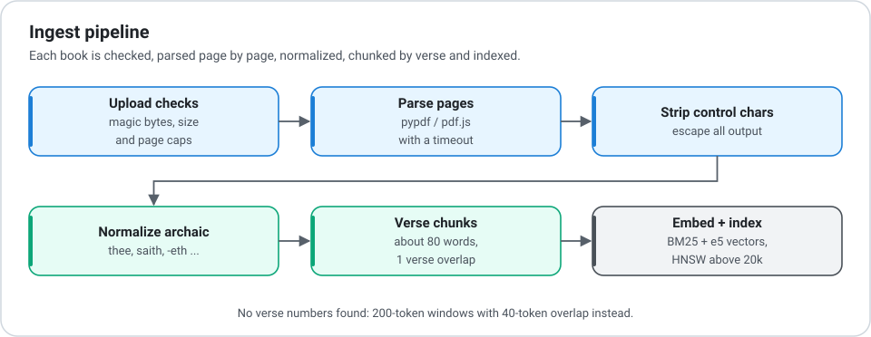
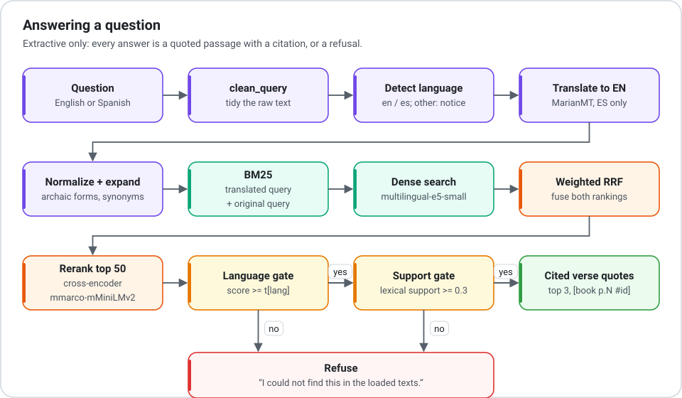
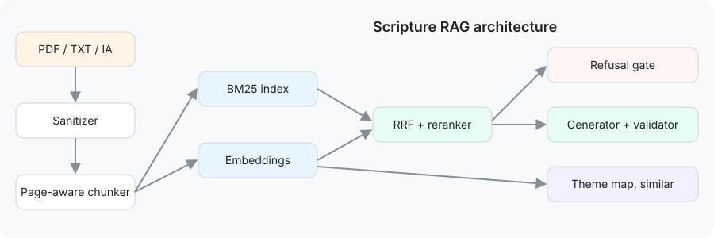
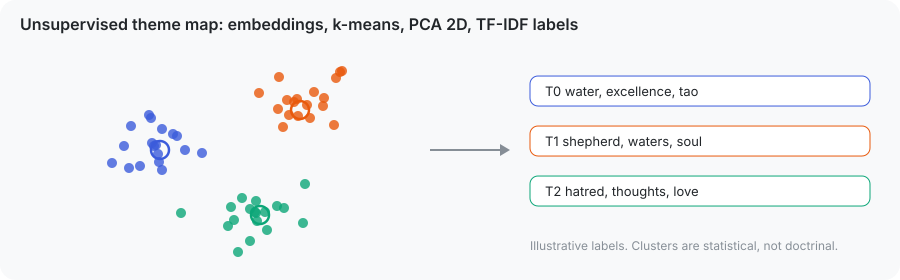
Passages are embedded, clustered with k-means (k chosen by silhouette), projected to 2D with PCA and labeled with class-based TF-IDF keywords. The map re-clusters as you add books.
Median of 5 runs on seeded synthetic data for n from 1,000 to 50,000. Dashed lines are the least squares fit of the predicted Big-O.
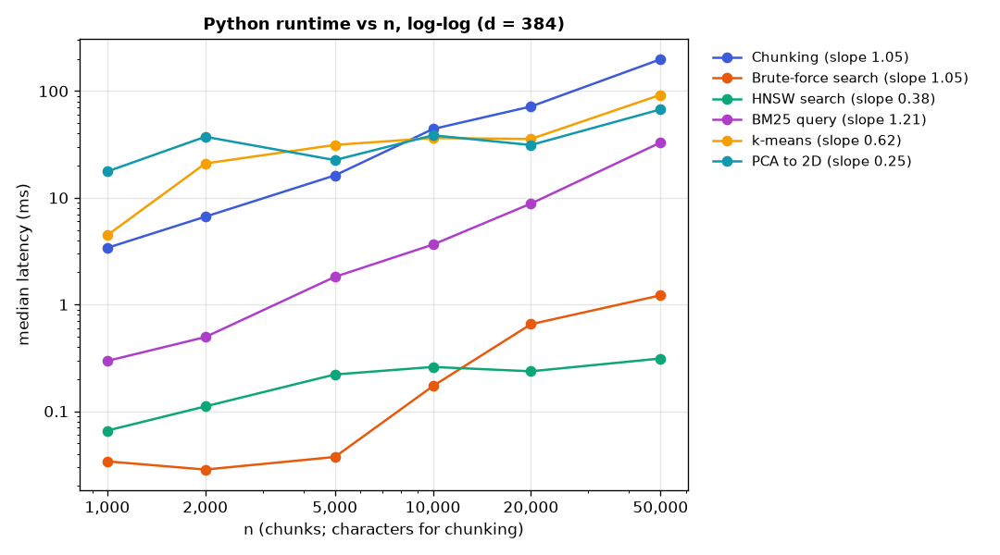
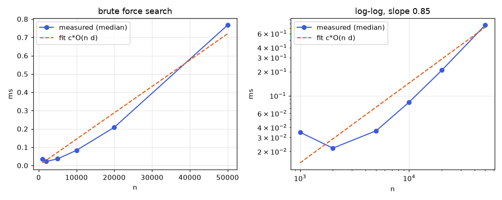
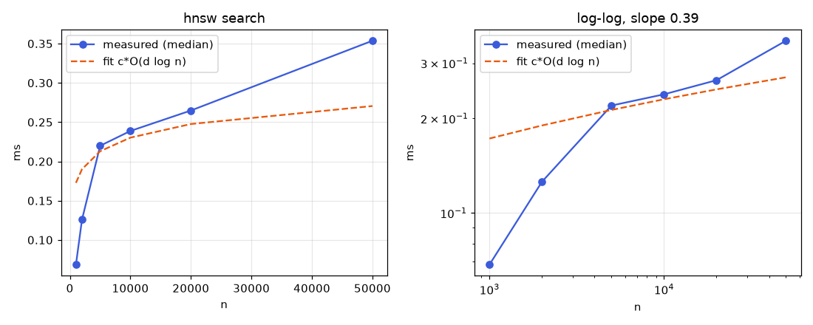
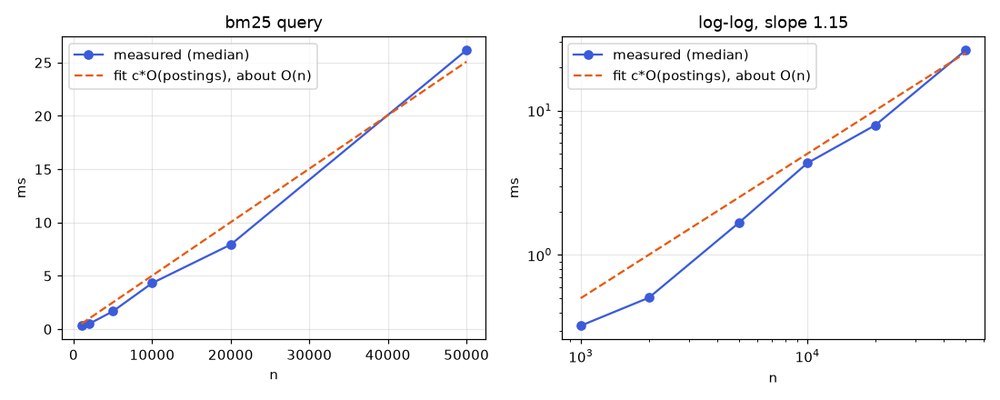
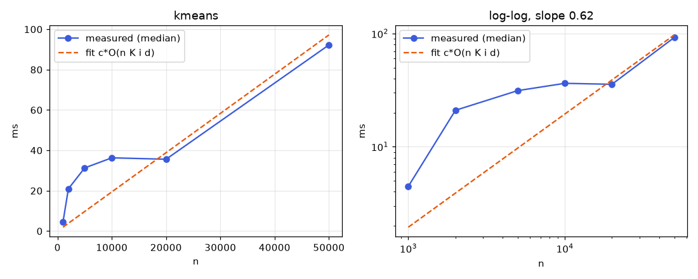
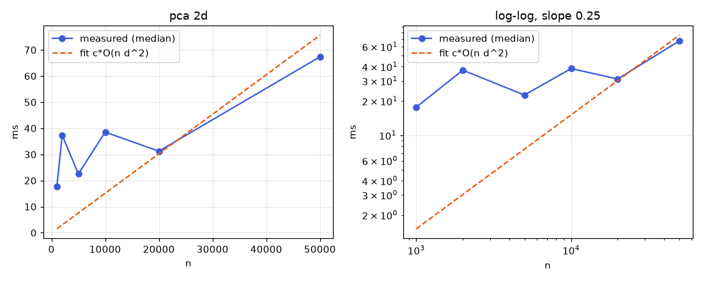
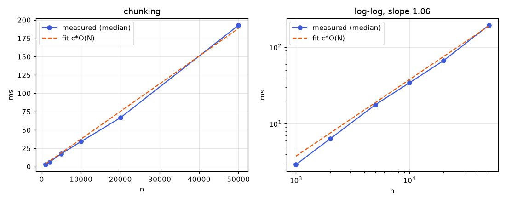
This page has no server side, no analytics and no third-party trackers. Files you load are parsed in your browser, and books, passages and history are stored only in this browser's IndexedDB. Network requests happen only when you choose the multilingual model (downloaded once from Hugging Face) or search the Internet Archive. PDF parsing and model code are fetched from a pinned CDN version and checked against a SHA-384 hash before running.
Use Clear all data in the library to delete everything at any time.